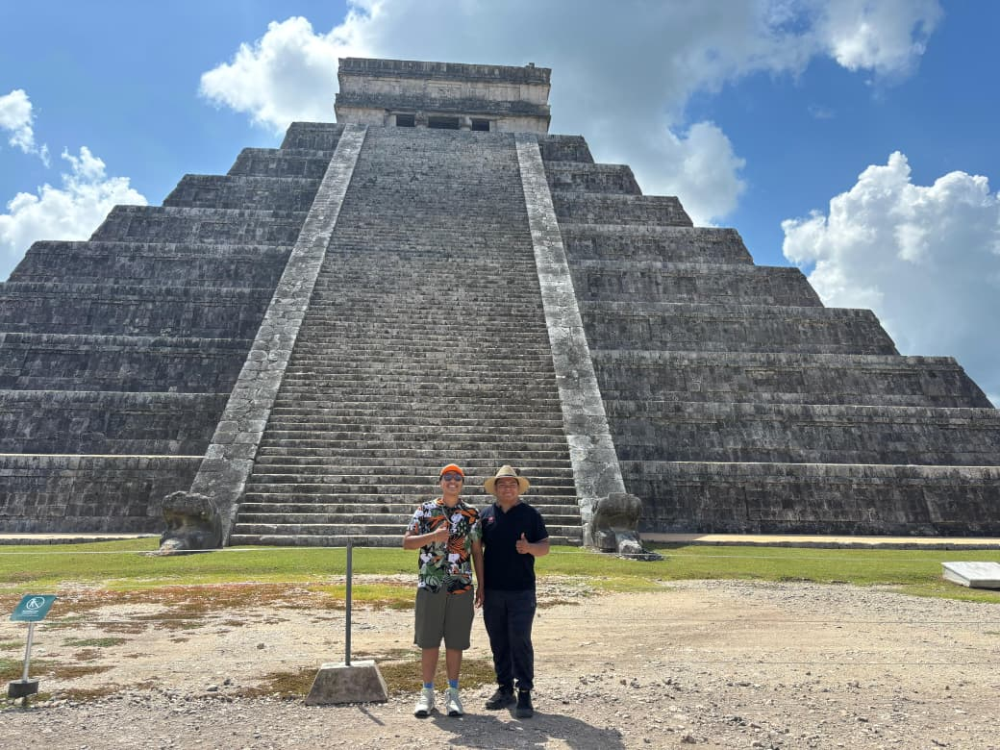

🌿 Imágenes Sagradas
Descubre la belleza de las plantas medicinales y los monumentos de la cultura maya a través de esta galería interactiva.

Albahaca: Propiedades Clave
La albahaca es rica en antioxidantes y compuestos antiinflamatorios, excelente para la digestión y reducción del estrés.
Ver Detalles Completos →

Menta: Propiedades Clave
La menta es conocida por sus efectos antiespasmódicos y carminativos, ideal para problemas estomacales.
Ver Detalles Completos →

Ruda: Propiedades Clave
La ruda tiene propiedades antiespasmódicas y eméticas, utilizada para calmar dolores menstruales y como repelente natural.
Ver Detalles Completos →

El Templo de Kukulkán
Es un edificio prehispánico ubicado en la península de Yucatán, en el actual estado del mismo nombre. El actual templo se construyó en el siglo XII d. C. por los mayas Itzáes en su capital, la ciudad de Chichén Itzá, fundada originalmente en el siglo VI d. C.
Ver Detalles Completos →

Sistema de Escritura Maya
Los mayas desarrollaron un sofisticado sistema de escritura logosilábico, capaz de registrar su historia, mitología y conocimientos astronómicos con gran detalle.
Ver Detalles Completos →
Plantas Medicinales Mayas
La flora sagrada de los mayas incluía plantas como la albahaca, menta y ruda, utilizadas para sanar, purificar y realizar ceremonias.
Ver Detalles Completos →